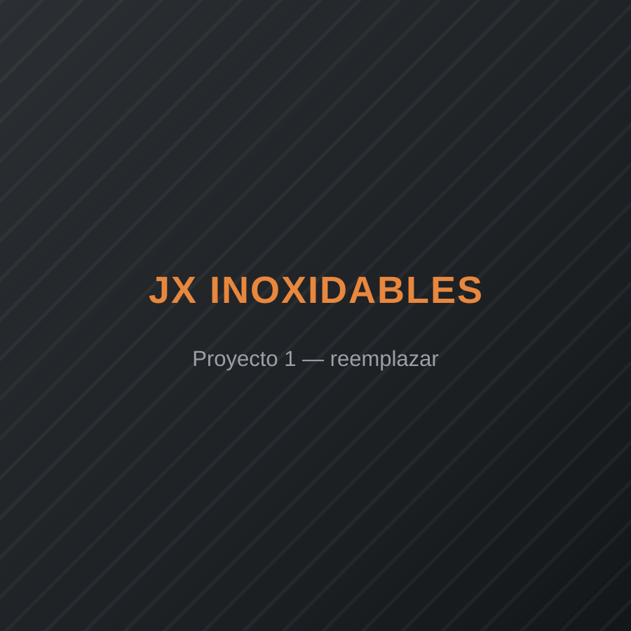
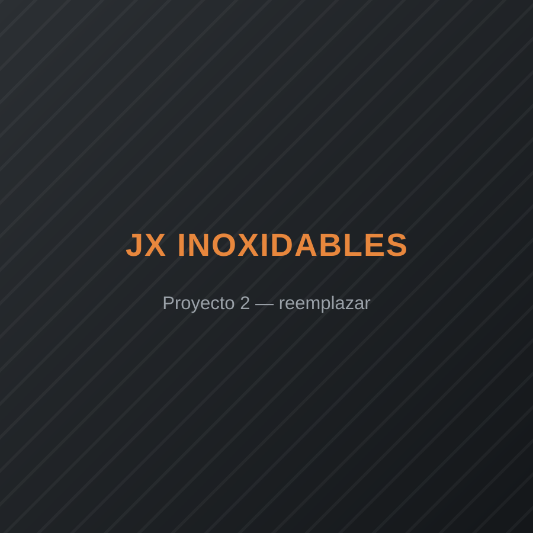
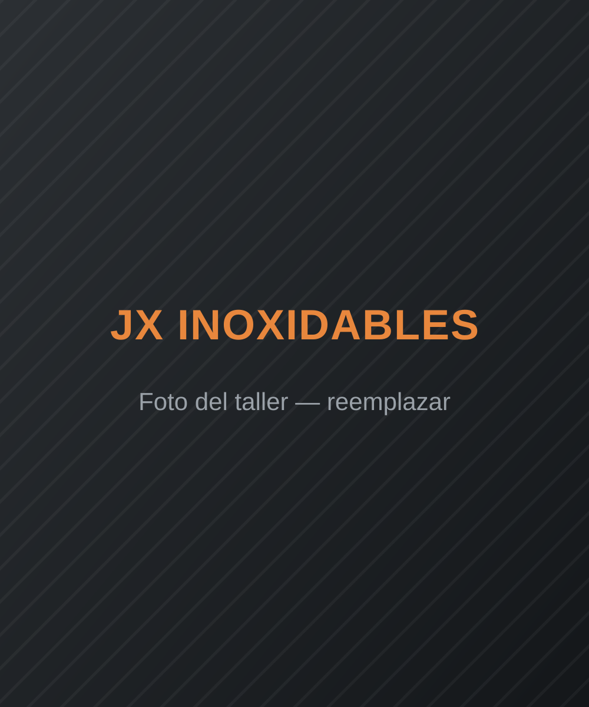

Pasamanos y barandas
Diseño y fabricación de pasamanos para escaleras, balcones y terrazas, a la medida exacta del espacio.
Fabricación & instalación · Acero inoxidable y vidrio
Diseñamos, soldamos e instalamos pasamanos, estructuras, ventanería y trabajos en vidrio a la medida de cada proyecto — residencial, comercial e industrial.
Qué hacemos
Diseño y fabricación de pasamanos para escaleras, balcones y terrazas, a la medida exacta del espacio.
Ventanas, divisiones, puertas y barandas en vidrio templado, combinadas con estructura en acero inoxidable.
Estructuras de escaleras interiores y exteriores, con acabados pulidos y anclajes reforzados.
Rejas, divisiones, marcos, techos y estructuras en acero inoxidable diseñadas según el proyecto.
Restauración de brillo, corrección de oxidación superficial y mantenimiento preventivo.
Cualquier proyecto en acero inoxidable que necesites: consúltanos, lo diseñamos y fabricamos a la medida.
Cómo trabajamos
Visitamos el sitio, tomamos medidas exactas y te asesoramos sobre el mejor diseño para el espacio.
Te presentamos la propuesta con materiales, tiempos y costos antes de iniciar cualquier trabajo.
Corte, soldadura y armado en acero inoxidable calibre industrial, con control de calidad en cada pieza.
Instalamos en obra con anclajes certificados, cuidando acabados y tiempos de entrega.
Pulido y limpieza final para el brillo característico del acero inoxidable.
Trabajos realizados
Estas son imágenes de referencia. Reemplázalas por tus propias fotos guardando el mismo
nombre de archivo dentro de images/gallery/ (ver README del proyecto).



Quiénes somos
Somos una empresa especializada en fabricación e instalación de pasamanos, estructuras en acero inoxidable y trabajos en vidrio. Trabajamos cada proyecto a la medida, cuidando el detalle desde el corte hasta el acabado final.
Jasvier — Fundador
Con más de 10 años de experiencia en el oficio, Jasvier fundó JX Inoxidables para llevar ese trabajo de taller a cada proyecto: pasamanos, vidrio, estructuras y todo lo relacionado con acero inoxidable, hecho con el mismo cuidado, medida por medida.
Contacto
Escríbenos por WhatsApp o completa el formulario — te respondemos con la cotización.